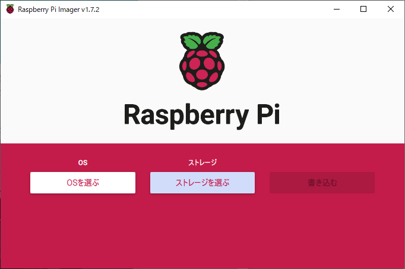

本ページの目的
お家にラズパイ開発環境をセットアップしたのでその手順を残しておきます。今回はUbuntu Server 20.04 LTS(64bit)を入れました。
内容としては以下になります。
- microSDへのOSインストール
- ネットワーク(インターフェース)設定
- SSH接続
- ホスト名の変更
準備するもの
- RaspberryPi4 本体
- microSDカード
- microHDMIケーブル
- 電源アダプタ
- USBキーボード
- Wifiルータ or LANケーブル
手順
microSDへのOSインストール
microSDにOSを書き込むためのツールが配布されてるのでこちらからダウンロード・インストールします。
(いまどきはOSインストール用のソフトウェアが配布されてるんですね。)
インストールしたソフトを起動したらインストールしたいOSを選択し、ストレージにマウントしたmicroSDを選択したら"書き込む"をクリックすれば完了です。
ネットワーク(インターフェース)設定
"モニター出力できる環境"と"モニター出力ができない環境"の2つの場合のやり方を記しておきます。
なお、モニター出力環境が無い場合の方法はmicroSDを別のPCでマウントしてアクセスしないと編集できないファイルをいじる必要があるため、インターフェースの設定をラズパイ起動中に変更することができないです。
モニター出力できる環境の場合
- microHDMIケーブル、USBキーボード、電源アダプタを接続（有線でアクセスする場合はLANケーブルも接続）
- モニターにログイン画面が出たらログインしパスワード設定をする。（※初期パスは"ubuntu"）
- /etc/netplan/下に設定ファイルを作成し、インターフェース設定を入れる（ファイル名は何でも良い？）
以下は例です。wifi設定とeth0(有線)の物理インターフェースの設定を入れてます。
IPは各自適した値を使用ください。$ sudo touch /etc/netplan/99-network.yaml
$ sudo vi /etc/netplan/99-network.yaml #--- network: version: 2 renderer: networkd wifis: wlan0: dhcp4: no dhcp6: no addresses: [192.168.10.9/24] gateway4: 192.168.10.1 nameservers: addresses: [192.168.10.1] access-points: アクセスポイント名(sshd): password: "password" ethernets: eth0: addresses: [192.168.1.9/24]
SSH接続
ここまでで正しくネットワークの設定ができていればssh接続ができます。 鍵認証などは必要がれば別途調べて行うと良いと思います。(後日記載するかも)
$ ssh ubuntu@192.168.10.9
※初期アカウント名はubuntuなので各自自分のアカウントを作りましょう。
モニター出力できない環境の場合
ホスト名の変更
デフォルトではホスト名も"ubuntu"となっているので以下のコマンドで変更
$ sudo hostnamectl set-hostname "hostname"
以上！
参考
参考①参考②
参考③